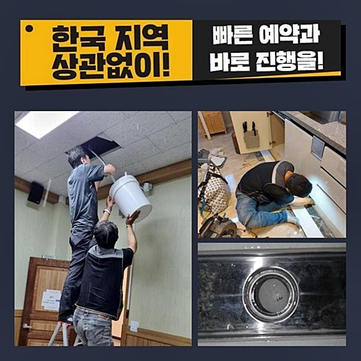
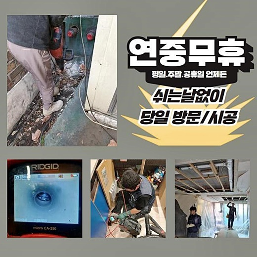
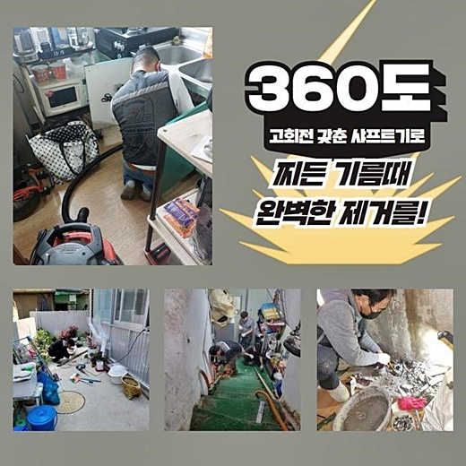
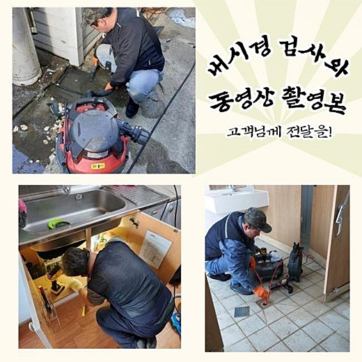
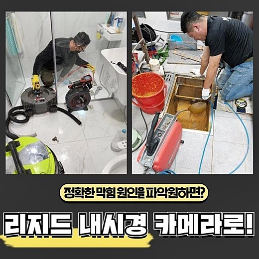
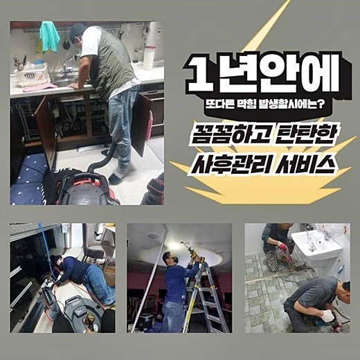
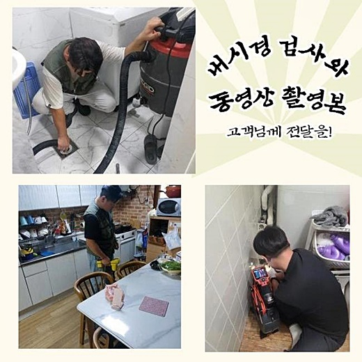

🏠 용산 원효로1동오수관역류 청파동 하수구뚫는비용 누수탐지
용인 싱크대막힘 전문 시공 후기

📋 작업 개요
- 위치: 용인
- 서비스 유형: 싱크대막힘, 하수구막힘, 배관막힘, 누수수리, 역류해결, 뚫는업체, 배관청소, 고압세척, 설비공사, 배관보수, 악취차단
- 작업 일시: 2024. 6. 13. 10:24
- 업체명: 하수구수사대 (010-5615-2118)
🔍 문제 상황
용산 원효로1동오수관역류 청파동 하수구뚫는비용 누수탐지
주택시설에는 욕실이나 다용도실이 있어서 이 부근으로 여러 종류의 찌꺼기가 모이게 되는데요
하지만 예측한 것 이상의 잔재들이 외부로 빠져나가지 못한채 누적되어 막힘이 생기는 것입니다
주방시설이나 화장실 배관 방향으로 머리카락 뭉텅이나 물에 잘 녹지 않는 노폐물이 배출되곤 한답니다
이런 물체들은 배수관 내부에서 강력하게 뭉치고 배관벽에 들러붙으면서 점차 커지게 돼요
적층을 이룬 슬러지는 관을 아예 막아서 역류의 트러블로 진화하기 쉬워서 신속히 없애주어야 합니다
오피스텔이나 아파트 등의 건축물은 다대수의 개인들이 살고 있으므로 배수관련 민원이 더욱더 빈번하다고 볼 수 있죠
배관 고장이 일어난다면 일상생활에 큰 누를 부여하여 고난을 누증시키죠
싱크대나 목욕실은 수시로 들락날락하는 장소이기 때문이죠
이 상황까지 치닫게 된다면 저희에게 긴급하게 전화하시는데요
매일 이런 업무를 하는 저희들은 역류 등의 고장을 매주 목격하지만 반대로 이를 맨처음 보게 되면 당황스러울 수밖에 없습니다
상황이 한층 고약해지기에 앞서 한시라도 조속히 진단을 받는 것이 사태 경감의 근로라는 것을 고지해 드립니다
우리는 의뢰인의 혼잡한 마음상태를 충분히 이해하며 언제나 적시에 방문을 드리도록 업무를 이행하고 있어요

🔎 원인 분석
💡 전문가 진단: 정밀 진단 장비를 사용하여 슬러지의 고착 여부를 판명하고 타격/세척 작업을 실시했습니다.
오수관 방향에서 배수관련 민원이 생긴 경우라도 가정내에서 물이 제거되지 않을 순간이 보일 수 있어요
해당 사태는 한군데의 하수관에서만 발발하지 않고 2~3세대에서 동시적으로 발생할 가망성이 높답니다
하수도관은 대개 잘 사용되어지다가 급작스럽게 정체되어 고초가 더더욱 커지죠
방치하면 할수록 잔재들의 총량이 증가하고 여러 분쟁이 나타나기 쉬워 조속히 대응해야 합니다
이러한 이론을 근거로 발생지점으로 이동해 뚫음시공을 시작하고 있어요
초반 고장이 나타났을 때는 심각하게 느껴지지 않다 하더라도 얼마 못가서 고약한 상황으로 변질될 수 있어요
배수관 안은 눈으로 보기 까다로우므로 장애가 고착화되는 동안에 방치해버릴 때가 많죠
게다가 1층부터 5층 사이에 사시는 경우 역류증세로 배수관 활용이 어려워질 수 있답니다
욕실에서 퀴퀴한 내가 풍기거나 사용한 물 등이 신속히 사라지지 않는 게 목격된다면 파이프 안이 정상적이지 않다는 의미일 수 있기에 선제적으로 조치하는 것이 요청된답니다
해당 상황에선 배관물세척을 이용하여 방예하죠
아파트의 배관엔 각종 쓰레기들이 허다하게 모이기에 주기적인 진단과 쇄소과정이 필요해요
이에 따라 저희들은 긴박하게 연락을 이행하지 않아도 확약된 날짜에 안전하게 배관 유지 보수 과정을 실시하고 있죠
천재지변이 없는한 계약된 날에 예방하여 하수관 안의 슬러지들을 처리한답니다
이로서 해당 시스템을 활용하시는 세대주께선 으레 안전하고 깔끔하게 욕실 등을 접하실 수 있는 것이에요

🔧 작업 과정
이 철두철미한 시스템으로 역류 등과 같은 심대한 말썽을 막아내고 있답니다
문제 지점에 가게되면 제일 먼저 할 일이 밖에 있는 오물처리장을 진단하는 건데요
여기는 건물 전체의 찌꺼기들이 집결하는 곳이어서 배관 막힘등이 발생하면 이쪽을 바로 진단해보는 활동이 필요한 것이죠
오수관 커버를 들어올리면 배수관으로 이물질들이 흘러나가지 않고 적체되어 있다는 걸 직시하였답니다
이게 몇일이라도 연속된다면 설비 주변으로 각종 찌꺼기가 누출하기도 해요
세대에서 시작한 막힘으로 세대 내의 오수가 외부로 흘러나가지 못하면 지저분한 물과 찌꺼기가 외부 환경으로 전이되어 수습하기 어려운 국면에 접어들 수도 있죠
이는 추가적인 냄새나 다른 피해도 일어날 수 있는 단계로 진화하기 쉬워서 재빠른 대처가 요구되죠
우선적으로 할 건 배관 내측에 겹겹이 쌓인 슬러지를 없애는 것이며 우리는 작업차 상단에 석션기기를 달아서 무거운 무게의 잔재들도 실용적으로 처치할 수가 있답니다
흡입 호스를 들고 내부에 적층되었던 이물들을 빠르게 빨아들였답니다
의뢰인 댁으로 가기 전엔 필수적으로 전체 공구를 빈틈없이 확인하고 있답니다
차량 안에는 업무에 요망되는 기계들이 완비된 상태이며 상시로 차량 작동수준을 점검한답니다
엔진이나 전체적인 시스템을 꼼꼼하게 체크하고 차체에 붙은 기기들이 올바르게 사용될 수 있는 수준인지 진단합니다
배관트러블을 야기한 슬러지를 없애고 탄산칼슘 등이 고착화된 지점을 청결히 하려면 공구류가 온전히 활동되어야 하기 때문이에요
클리닝을 완료한 뒤 사용한 장비도 소제하고 업무를 종결하고 있습니다
이와같이 저희팀은 매일 기기일체를 관리해 나가기에 불각시에 일어날 수 있는 고장에 빠르게 조치하고 있어요
쓰레기를 처리한 다음에는 오물탱크 부근의 하수관을 소형 내시경CCTV를 활용해 파악합니다
배관은 아주 좁은 길로 두루말이 휴지 정도 부피를 가지고 있어요
맨눈으로 보기 힘든 파이프 내부의 현황을 검사하기 위해 카메라 이용이 필수라고 볼 수 있답니다
막힘의 경중에 상관없이 이 도구를 써서 고객님에게도 안쪽의 디테일한 모양새를 내보입니다
내부의 상황을 조사하다보면 배수관 측면에 석회질을 포함한 고형물이 있고 슬러지 뭉치가 안을 채우고 있다는 사실을 인식할 수가 있었어요
이 때에는 물세척 공구가 요망됩니다


✅ 작업 완료
그것은 강력하게 고정된 슬러지를 분리하여 물이 뜻대로 배출되도록 돕습니다
작업을 하면서 구체적 내용에 대해서도 안내해 드리면서 공사진행을 한답니다
계속된 세정업무를 통하여 이물 뭉치가 분리되고 없어진 걸 직시할 수 있었어요
또 파이프 벽을 에워싼 소석회 성분도 빈틈없이 청소하여 내부를 깨끗이 만들었답니다
조그마한 슬러지라도 하여도 제때 제거해 주어야 파이프 내에 눌어붙는 것을 차단할 수가 있는 겁니다
싱크대 유지보수나 물막힘에 관한 조치가 필요하시다면 편안하게 방문 예약해 주십시오




⚠️ 베란다 누수 및 방수 관리 방법
- ✅ 비가 많이 올 때 창틀 주변이나 아래층 천장에 얼룩이 생기는지 정기적으로 확인해 보세요.
- ✅ 우수관 주변 실리콘 마감이 들뜨거나 깨진 틈새가 있는지 손상 여부를 수시로 체크하세요.
- ✅ 베란다 바닥 타일의 줄눈(메지)이 소실되면 그 틈으로 물이 침투하여 누수가 유발됩니다.
- ✅ 누수 의심 증상 발견 시 방치하면 아래층 손실이 커지므로 즉시 전문가의 진단을 받으십시오.
💡 핵심 정리
- 확실한 장비 작업(내시경 점검 및 샤프트 스케일링)으로 원인을 뿌리 뽑습니다.
- 작업 후 1년 이내에 동일한 부위 재발 시 100% 무상 A/S 서비스를 보장합니다.
- 서울 · 경기 · 인천 전 지역에 24시간 언제든 긴급 출동할 수 있도록 항시 대기 중입니다.
❓ 자주 묻는 질문 (FAQ)
🚨 용인 싱크대막힘 문제로 고민이신가요?
정확한 원인 진단과 확실한 시공으로 재발 없는 해결을 약속드립니다.
24시간 긴급 출동 | 서울 · 경기 · 인천 전지역 | 1년 내 재발 시 무상 A/S